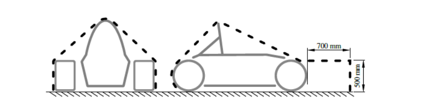

Electrical Components¶
T11.1 Low Voltage System¶
T11.1.1¶
The Low Voltage System (LVS) is defined as - [CV ONLY] all electrical circuits of the vehicle, - [EV ONLY] every electrical part that is not part of the TS, see EV1.1.1.
T11.1.2¶
The maximum permitted voltage that may occur between any two electrical connections in the LVS is 60 V DC or 25 V AC RMS.
T11.1.3¶
All LVS parts must be adequately insulated.
T11.1.4¶
[CV ONLY] The following systems are excluded from the LVS voltage limit, see T11.1.2:
- High voltage systems for ignition,
- High voltage systems for injectors,
- Voltages internal to OEM charging systems designed for <60 VDC output.
T11.1.5¶
[CV ONLY] The maximum permitted voltage for motor controller/inverter low power control signals is 75 V DC
T11.1.6¶
[EV ONLY] The LVS must not use orange wiring or conduit.
T11.1.7¶
[EV ONLY] The LVS must be grounded to the chassis.
T11.2 Master Switches¶
T11.2.1¶
Master switches, see T11.3, EV6.2 and T14.6, must be a mechanical switch of the rotary type, with a red, removable handle. The handle must have a width of at least 50mm and must only be removable in electrically open position. They must be direct acting, i.e. they must not act through a relay or logic.
T11.2.2¶
Master switches must be located on the right side of the vehicle, in proximity to the main hoop, at the 95th percentile male driver’s shoulder height, as defined in T4.3, and be easily actuated from outside the vehicle. The centre of any master switch must not be mounted lower than the vertical distance of the template’s (see T4.3) middle circle centre to the ground surface multiplied by 0.8.
T11.2.3¶
The “ON” position of the switch must be in the horizontal position and must be marked accordingly. The “OFF” position of the master switch must also be clearly marked.
T11.2.4¶
Master switches must be rigidly mounted to the vehicle and must not be removed during maintenance.
T11.2.5¶
Master switches must be mounted next to each other.
T11.3 Low Voltage Master Switch¶
T11.3.1¶
An LVMS according to T11.2 must completely disable
- [EV ONLY] power to the LVS,
- [CV ONLY] power from the Low Voltage (LV) battery and the alternator to the LVS.
T11.3.2¶
The LVMS must be mounted in the middle of a completely red circular area of ≥50 mm diameter placed on a high contrast background.
T11.3.3¶
The LVMS must be marked with “LV” and a symbol showing a red spark in a white edged blue triangle.
T11.4 Shutdown Buttons¶
T11.4.1¶
A system of three shutdown buttons must be installed on the vehicle.
T11.4.2¶
Each shutdown button must be a push-pull or push-rotate mechanical emergency switch where pushing the button opens the shutdown circuit, see EV6.1 and CV4.1.
T11.4.3¶
One button must be located on each side of the vehicle behind the driver’s compartment at approximately the level of the driver’s head. The minimum allowed diameter of the shutdown buttons on both sides of the vehicle is 40mm. The buttons must be easy reachable from outside the vehicle.
T11.4.4¶
One shutdown button serves as a cockpit-mounted shutdown button and must
- Have a minimum diameter of 24mm,
- Be located in easy reach of a belted-in driver,
- Be alongside of the steering wheel and unobstructed by the steering wheel or any other part of the vehicle.
T11.4.5¶
The international electrical symbol consisting of a red spark on a white-edged blue triangle must be affixed in close proximity to each shutdown button.
T11.4.6¶
Shutdown buttons must be rigidly mounted to the vehicle and must not be removed during maintenance.
T11.4.7¶
Shutdown buttons must be coloured red.
T11.5 Inertia Switch¶
T11.5.1¶
An inertia switch must be part of the shutdown circuit, see EV6.1 and CV4.1, such that an impact will result in the shutdown circuit being opened. The inertia switch must latch until manually reset.
T11.5.2¶
The device must trigger due to an omnidirectional peak acceleration of ≤8 g for a half sine test pulse of ≥50ms length and ≤13g for a half sine test pulse of ≥20ms length. The “Sensata Resettable Crash Sensor” should meet those requirements.
T11.5.3¶
The device must not include any semiconductor components.
T11.5.4¶
The device must be rigidly attached to the vehicle and installed according to manufacturer specification to the vehicle. It must be possible to demount the device so that its functionality may be tested by shaking it.
T11.6 Brake System Plausibility Device¶
T11.6.1¶
A standalone non-programmable circuit, the BSPD, must open the shutdown circuit, see EV6.1 and CV4.1, when hard braking occurs, whilst
- [EV ONLY] ≥5 kW power is delivered to the motors,
- [CV ONLY] The throttle position is more than 25% over idle position.
The shutdown circuit must remain open until power cycling the LVMS or the BSPD may reset itself if the opening condition is no longer present for more than 10s.
T11.6.2¶
The action of opening the shutdown circuit must occur if the implausibility is persistent for more than 500ms.
T11.6.3¶
The BSPD must be directly supplied, see T1.3.1, from the LVMS, see T11.3.
T11.6.4¶
Standalone is defined as there is no additional functionality implemented on all required Printed Circuit Boards (PCBs). The interfaces must be reduced to the minimum necessary signals, i.e. power supply, required sensors and the shutdown circuit. Supply and sensor- signals must not be routed through any other devices before entering the BSPD.
T11.6.5¶
To detect hard braking, a brake system pressure sensor must be used. The threshold must be chosen such that there are no locked wheels, and the brake pressure is <= 30bar.
T11.6.6¶
[EV ONLY] To measure power delivery, a DC circuit current sensor only must be used. The threshold must be chosen to an equivalent of 5kW for maximum TS voltage.
T11.6.7¶
It must be possible to separately disconnect each sensor signal wire for technical inspection.
T11.6.8¶
All necessary signals are System Critical Signal (SCS), see T11.9.
T11.6.9¶
[EV ONLY] The team must prove the function of the BSPD during technical inspection by sending an appropriate signal that represents the current, in order to achieve 5 kW whilst pressing the brake pedal. This test must prove the functionality of the complete BSPD except for any commercially available current sensors.
T11.6.10¶
[EV ONLY] The BSPD including all required sensors must not be installed inside the TSAC.
T11.7 Low Voltage Batteries¶
T11.7.1¶
LV batteries are all batteries connected to the LVS.
T11.7.2¶
LV batteries must be securely attached to the chassis and located within the rollover protection envelope, see T1.1.16.
T11.7.3¶
Any wet-cell battery located in the driver compartment must be enclosed in a non- conductive, waterproof (according to IPX7 or higher, IEC 60529) and acid resistant container.
T11.7.4¶
LV batteries must have a rigid and sturdy casing.
T11.7.5¶
Ungrounded terminals must be insulated.
T11.7.6¶
LV batteries must have overcurrent protection, not more than 100mm from ungrounded terminals, that trips at or below the maximum specified discharge current of the cells within the time periods specified on the datasheet for the battery.
For example, if the datasheet specifies a continuous discharge current of 70A, a 10 second discharge pulse current of 120A and a 1 second discharge pulse current of 150A, the overcurrent protection must not allow any of these requirements to be exceeded.
T11.7.7¶
All LV batteries using chemistries other than lead acid must be:
- Presented at technical inspection with markings identifying it for comparison to a datasheet and/or other documentation proving the pack and supporting electronics meet all rules requirements.
- Directly accessible with a fire extinguisher nozzle of 35mm diameter x 150mm long, without removing body panels and with the driver seated normally in the vehicle. Covers which can be easily "punched through" are acceptable.
Any such cover or access location must be identified using the appropriate symbol below and be clearly visible to marshals approaching the car.
 Figure 19: Fire Port location markings
Figure 19: Fire Port location markings
If the LV battery is positioned greater than 50mm inboard of the access location, then a tube of at least 35mm diameter must be present to direct the discharge from the extinguisher towards the LV battery. The tube must be no more than 750mm in length. Any access tube must be separated from the driver by a firewall as specified in T4.8.
NOTE: A tube routed from an engine bay opening to the battery packs could be acceptable if compliant with the rules.
- Identified with the symbol below (minimum height 75mm and showing the appropriate battery chemistry) on each side of the car AND adjacent to any labels required by T11.7.7.
 Figure 20: Battery Chemistry marking
Figure 20: Battery Chemistry marking
T11.7.8¶
Battery packs based on lithium chemistry other than lithium iron phosphate (LiFePO4) and all LV hybrid system energy stores, regardless of chemistry type:
- Must include overcurrent protection that trips at or below the maximum specified discharge current of the cells,
- Must have a fire-retardant casing, see T1.2.1.
- Must include overtemperature protection of at least 30 % of the cells, meeting EV5.8.4, that trips when any cell leaves the allowed temperature range according to the manufacturer’s datasheet, but not more than 60°C, for more than 1s and disconnects the battery,
- Must include voltage protection of all cells that trips when any cell leaves the allowed voltage range according to the manufacturer’s datasheet for more than 500ms and disconnects the battery,
- It must be possible to display all cell voltages and measured temperatures, e.g. by connecting a laptop,
- Signals needed to fulfil these requirements are SCS, see T11.9.
T11.7.9¶
All batteries must be separated from the driver and sources of heat by a firewall as specified in T4.8.
T11.7.10¶
All batteries that are less than 350mm above the ground must be shielded from front, side and rear impact collisions, by a fully triangulated structure meeting T3.2 or equivalent.
T11.8 Accelerator Pedal Position Sensor (APPS)¶
T11.8.1¶
T11.8 only applies for electric vehicles, see chapter EV, or internal combustion vehicles using Electronic Throttle Control (ETC), see CV1.6.
T11.8.2¶
The APPS must be actuated by a foot pedal.
T11.8.3¶
Pedal travel is defined as percentage of travel from fully released position to a fully applied position where 0% is fully released and 100% is fully applied.
T11.8.4¶
The foot pedal must return to the 0% position when not actuated. The foot pedal must have a positive stop preventing the mounted sensors from being damaged or overstressed. Two springs must be used to return the foot pedal to the 0% position and each spring must work when the other is disconnected. Springs in the APPS are not accepted as return springs.
T11.8.5¶
At least two separate sensors must be used as APPSs. Separate is defined as not sharing supply or signal lines. They may share a common housing if the use of independent supply and signal lines is easily determined.
T11.8.6¶
If analogue sensors are used, they must have different, non-intersecting transfer functions. A short circuit between the signal lines must always result in an implausibility according to T11.8.9.
T11.8.7¶
The APPS signals are SCSs, see T11.9.
T11.8.8¶
If an implausibility occurs between the values of the APPSs and persists for more than 100ms
- [EV ONLY] The power to the motor(s) must be immediately shut down completely. It is not necessary to completely deactivate the tractive system, the motor controller(s) shutting down the power to the motor(s) is sufficient,
- [CV ONLY] The power to the electronic throttle must be immediately shut down.
T11.8.9¶
Implausibility is defined as a deviation of more than ten percentage points pedal travel between any of the used APPSs or any failure according to T11.9.
T11.8.10¶
If three sensors are used, then in the case of an APPS implausibility, any two sensors that are plausible may be used to define the torque target and the 3rd APPS may be ignored.
T11.8.11¶
It must be possible to separately disconnect each APPS signal and power wires to check all functionalities.
T11.8.12¶
A fully released accelerator pedal in manual mode must result in:
- [EV ONLY] A wheel torque of ≤0 Nm,
- [CV ONLY] An idle position or lower throttle set-point. This may only be exceeded during a gearshift for a maximum of 500ms.
T11.8.13¶
When any kind of digital data transmission is used to transmit the APPS signal, the ESF must contain a detailed description of all the potential failure modes that can occur, the strategy that is used to detect these failures and the tests that have been conducted to prove that the detection strategy works. The failures to be considered must include but are not limited to the failure of the APPS, APPS signals being out of range, corruption of the message and loss of messages and the associated time outs.
T11.8.14¶
Any algorithm or electronic control unit that can manipulate the APPS signal, for example for vehicle dynamic functions such as traction control, may only lower the total driver requested torque and must never increase torque unless it is exceeded during a gearshift. Thus, the drive torque which is requested by the driver may never be exceeded.
T11.9 System Critical Signal¶
T11.9.1¶
SCS are defined as all electrical signals which
T11.9.2¶
Any of the following SCS signal failures must result in a safe or error state of all connected systems:
Failures of signals transmitted by cable:
i. Open circuit,
ii. Short circuit to ground.
Failures of analogue sensor signals transmitted by cable:
i. Short circuit to supply voltage.
Failures of sensor signals used in programmable devices:
i. Implausibility due to out of range signals, e.g. mechanically impossible angle of an angle sensor.
Failures of digitally transmitted signals by cable or wireless:
i. Data corruption (e.g. checked by a checksum),
ii. Loss and delay of messages (e.g. checked by transmission time outs).
Signals might be a member of multiple signal classes, e.g. analogue signals transmitted by cable might be a member of the first three classes.
T11.9.3¶
If a signal failure is correctable, e.g. due to redundancy or worst-case values, the safe or error state must be entered as soon as an additional non correctable failure occurs.
T11.9.4¶
The maximum allowed delay of messages according to T11.9.2 must be chosen depending on the impact of delayed messages to the connected system but must not exceed 500ms.
T11.9.5¶
Safe and error states are defined depending on the signals as follows:
- Error State i. signals only influencing indicators – indicator(s) not illuminated which indicate a failure of its own function or of the connected system,
Note: In this case it is not possible to identify from the indicator(s) whether a safe state has been entered and further action by the team is required to confirm this or what additional action is required to enter a safe state.
- Safe State
- Signals only influencing indicators – Indicating a failure of its own function or of the connected system,
- Low voltage battery signals – At least one pole is electrically disconnected from the rest of the vehicle,
- [AUTONOMOUS ONLY] – the ASSI must be showing AS OFF,
- [EV ONLY] For all others signals – opened shutdown circuit and opened AIRs,
- [CV ONLY] For all others signals – opened shutdown circuit and stopped engine.
T11.9.6¶
Indicators according to T11.9.1 with safe state “illuminated” (e.g. absence of failures is not actively indicated) must be illuminated for 1s to 3s for visible check after power cycling the LVMS.
T11.9.7¶
The ESF must contain a detailed description of all the potential failure modes that can occur for each SCS, the strategy that is used to detect these failures and the tests that have been conducted to prove that the detection strategy works. The failures to be considered must include but are not limited to the failure of sensors and actuators, signals being out of range, corruption of the message and loss of messages and the associated time outs.
T11.10 System Status Light¶
T11.10.1¶
Any system status light(s), see T6.3 and T14.10, must meet the following requirements:
- Black background,
- Rectangular, triangular, or near-round shape,
- Minimum illuminated surface of 15cm2 with even luminous intensity,
- Clearly visible in very bright sunlight,
- If LED lights are used without a diffuser, they must not be more than 20mm apart,
- If a single line of LED lights is used, the minimum length is 150mm.
T11.11 Sensors & Electrical Components Mounting¶
T11.11.1¶
All sensors and components must be securely mounted. For all mounts, T2.2.4 applies.
T11.11.2¶
Sensors and components may not come into contact with the driver’s helmet under any circumstances.
T11.11.3¶
All sensors and components must be positioned within the surface envelope, see T1.1.18. Actors for aerodynamic devices must be within the box defined in T8.2.
T11.11.4¶
Passive antennas, but not their mounts, that are exclusively acting as such with the longest side <100mm may protrude from the surface envelope.
T11.11.5¶
Antennas may also be mounted on the aerodynamic devices, if they do not protrude from the bounding box of the device.
T11.11.6¶
Additionally, sensors may be mounted with a maximum distance of 500mm above the ground and less than 700mm forward of the front of the front tyres (see Figure 21). They must not exceed the width of the front axle (measured at the height of the hubs).

Figure 21: Envelope to mount sensor systems.T11.11.7¶
The body of any video/photographic camera which is not exclusively used as sensor for the AS unit must be secured at a minimum of two points on different sides of the camera body. If a tether is used to restrain the camera, the tether length must be limited so that the camera cannot contact the driver. Such camera installations must be approved at technical inspection.